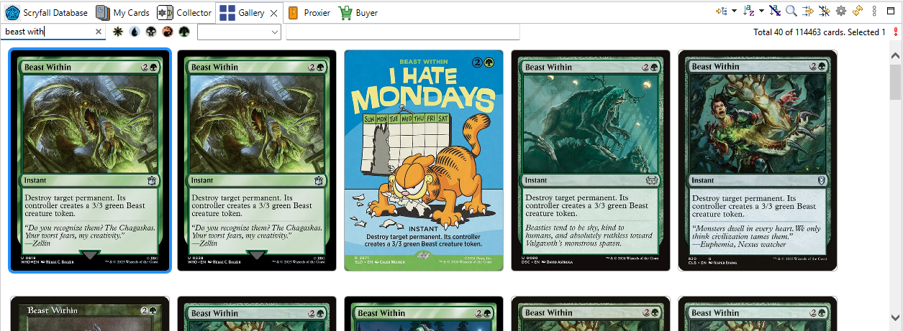

The Gallery
The Gallery view shows the card database as card images instead of rows —
perfect to browse a set or to find a card by its artwork.

- It shows the same cards as the Scryfall Database view, with the same search, filters and grouping
(see Searching and filtering).
- Large lists are split in pages, so the images load quickly.
- Click an image to see the card in Card Info.
- Right-click an image for the same actions as in the list (Add to, Copy...).
Any card list can show images too: use View As > Gallery in a deck,
a collection or My Cards.
Options: .
See also: Browsing the card database